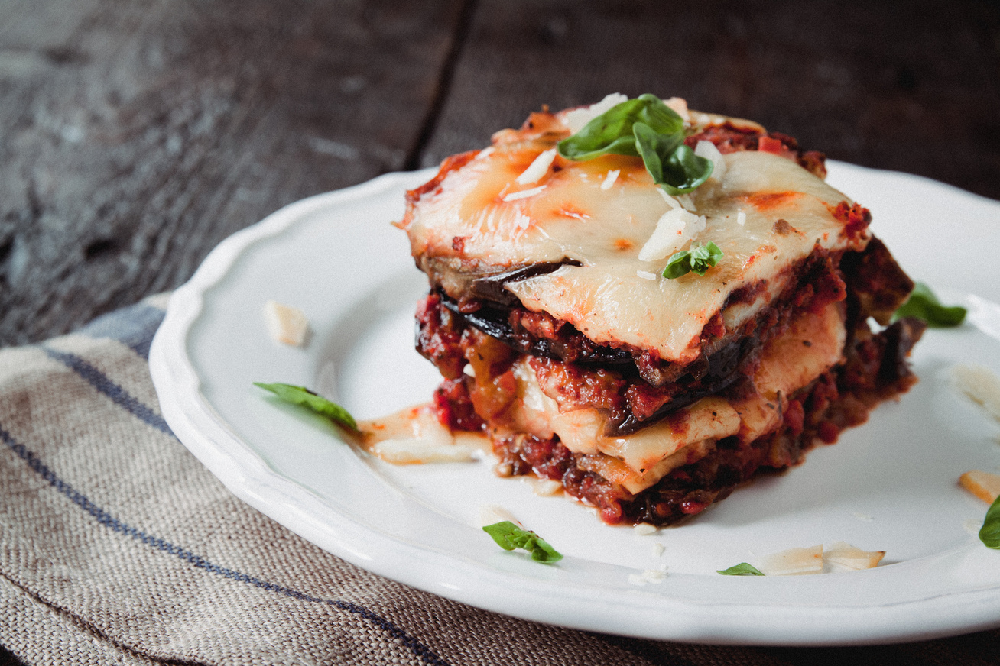

Hozzávalók:
- 2 db padlizsán, vékony szeletekre vágva
- 400 g darált marhahús
- 1 db hagyma, apróra vágva
- 2 gerezd fokhagyma, apróra vágva
- 400 g paradicsomszósz
- 200 g reszelt mozzarella sajt
- 100 g reszelt parmezán sajt
- fűszerek ízlés szerint (pl. oregánó, bazsalikom)
- só
- bors
Elkészítés:
- Melegítsd elő a sütőt 180°C-ra.
- Sózd meg a padlizsánszeleteket mindkét oldalukon, majd hagyd 15 percig állni egy szűrőben, hogy levet engedjenek.
- Melegítsd elő az olívaolajat egy serpenyőben közepes lángon.
- Pirítsd meg benne az apróra vágott hagymát és fokhagymát, majd add hozzá a darált marhahúst. Pirítsd 5-6 percig, vagy amíg átsül.
- Öntsd hozzá a paradicsomszószt és fűszerezd ízlés szerint. Főzd további 5 percig.
- Egy sütőedény aljára terítsd el egy réteg padlizsánszeleteket.
- Ráhalmozd a paradicsomos húsos keveréket, majd szórd meg reszelt mozzarellával és parmezánnal.
- Ismételd meg a rétegezést, amíg el nem fogy a hozzávaló.
- Tedd a rakott padlizsánt a sütőbe, és süsd kb. 30 percig, vagy amíg a sajt szép aranybarna nem lesz a tetején.
- Tálald friss bazsalikomlevéllel megszórva.